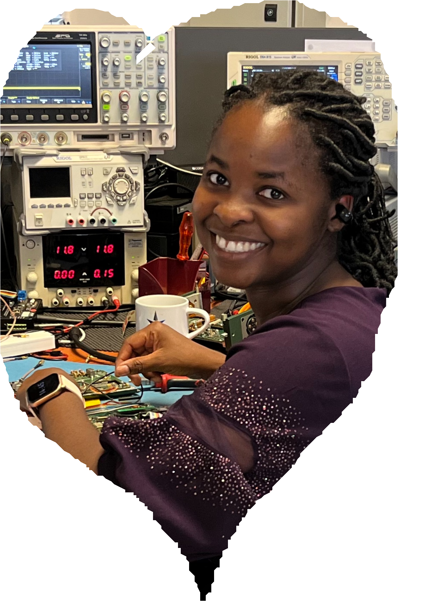
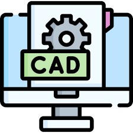
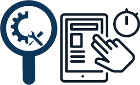
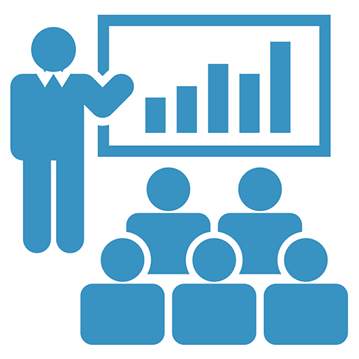
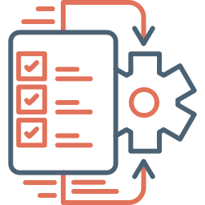

Project Management
Lead multidisciplinary engineering projects from design to commissioning, managing budgets, timelines, procurement and stakeholder coordination to deliver high-quality telecom and electronic solutions.

Hi, I am
a
Electronic Engineer | AI & ML Engineer
Get To Know More
I’m a Design Engineer with over 11 years of experience in electronics, automation, data analytics and 1 year experience as a lecturer. I specialize in automating systems, developing firmware and software, and using data to improve performance and efficiency. I hold a BTech in Electronic communication Engineering, a Master’s in Industrial Engineering, and I’m expected to graduate in April/May 2026 for Master’s in Data Science. I’m passionate the making smart electronic design and by applying AI, machine learning, and Industry 4.0 technologies to solve real-world challenges and support digital transformation across operations. I enjoy working with cross-functional teams and constantly seek innovative ways to bridge the gap between engineering and digital transformation.
B-Tech Electronic Communication Engineering | CPUT (2013) | South Africa M-SC Industrial Engineering | NUST (2017) | Namibia M-SC Data Science | NUST (expected 2026) | Namibia
Registered as In-coperated Engineer in Electrical ENgineering (2022)
What I Do
Lead multidisciplinary engineering projects from design to commissioning, managing budgets, timelines, procurement and stakeholder coordination to deliver high-quality telecom and electronic solutions.

Advanced fault diagnosis, troubleshooting and repair of telecommunication systems, electronic equipment and printed circuit boards ensuring operational reliability.

Engineering schematic and system design using AutoCAD and MS Visio for telecom infrastructure, system layouts and technical documentation.

PCB schematic capture, layout and electronic system development using Mentor Graphics and KiCAD, compliant with MIL-STD, ETSI and ISO quality standards.

Development of automated testing systems and engineering solutions using Arduino, Python, C, MATLAB, LabVIEW, TestStand and MySQL databases.

Factory Acceptance Testing (FAT), system validation, commissioning and compliance verification for telecom equipment and electronic systems.

Apply data analytics, machine learning and artificial intelligence techniques for automation, anomaly detection and process optimization in smart engineering systems.

Apply Lean Six Sigma principles to improve workflows, reduce production costs and enhance operational efficiency across engineering processes.

Deliver technical training, mentorship and skill transfer programs while developing operational manuals and supporting engineering education initiatives.

Develop engineering dashboards and web systems using Python frameworks, databases and modern web technologies for monitoring and reporting solutions.

Research, design and commissioning of automated electronic test equipment including Bed-of-Nails PCB testing platforms. Develop hardware interfaces, fixtures and validation procedures using LabVIEW and TestStand to support production testing, fault diagnosis, quality compliance and long-term system sustainability.
Designed and developed an automated Bed-of-Nails testing system for military radio power supply units to support production validation and quality assurance. The system performs DC-DC voltage verification, current measurements, loading tests and power amplifier filter testing under controlled conditions.
Experience Learned: Hardware fixture design, PCB interface engineering, automated diagnostics development, production testing optimisation and compliance verification for mission-critical equipment.


Designed automated test equipment for Digital Signal Processing (DSP) boards supporting RF sniffing, signal verification and electrical performance validation. The system enables repeatable diagnostics, current monitoring and RF functionality testing during production.
Experience Learned: RF diagnostics automation, embedded interfacing, test sequencing development and signal analysis integration.


Developed automated test equipment for validating Low Pass Filters used in military communication radios. The system performs signal integrity, frequency response and attenuation testing ensuring RF compliance.
Experience Learned: RF measurement automation, fixture development, signal acquisition programming and production quality validation.


Designed and fine-tuned Low Pass Filters (LPF) and Band Pass Filters (BPF) for multiple radio operations ensuring signal purity and frequency selectivity across operational bandwidths.
Experience Learned: RF tuning, impedance matching, frequency analysis and performance optimisation using advanced measurement instrumentation.


Performed advanced troubleshooting, diagnostics and repair of telecommunication electronic boards ensuring operational reliability and reduced downtime in production and field environments.
Experience Learned: Root cause analysis, component-level repair, signal tracing and preventive maintenance practices.


Led the design and development of an Artificial Intelligence noise reduction system to enhance communication clarity in military radio operations using signal processing and machine learning techniques.
Experience Learned: AI model development, audio signal processing, anomaly detection and intelligent communication enhancement systems.